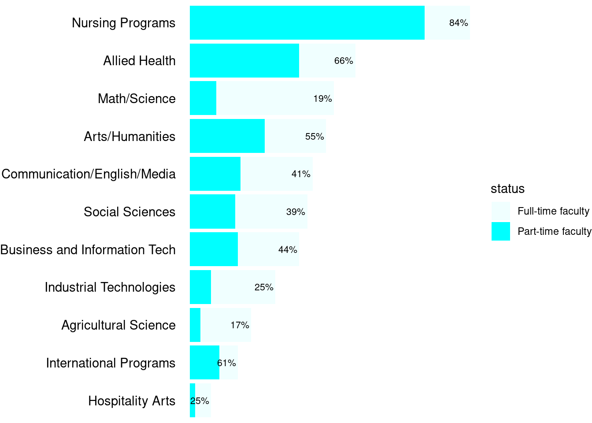

Loading required package: rvest
Loading required package: magrittr
Loading required package: dplyr
Attaching package: 'dplyr'
The following objects are masked from 'package:stats':
filter, lag
The following objects are masked from 'package:base':
intersect, setdiff, setequal, union
Loading required package: tidyr
Attaching package: 'tidyr'
The following object is masked from 'package:magrittr':
extract
Loading required package: forcats
Loading required package: ggplot2
Loading required package: stringr
ℹ Sourcing gist "d51986afea07c9a6f7c7c93f91e5bbbc"
Loading required package: readr
Attaching package: 'readr'
The following object is masked from 'package:rvest':
guess_encoding
Adjuncts are contigent faculty whose roles and responsibilities can vary from institution to institution. In generally, they serve as primary instructors of courses while being paid significantly less than full-time faculty, both in total and per course hour. Adjunct faculty at Kirkwood are given limited access to departmental resources (including personnel through meetings, professional development opportunities, and office space). Part-time faculty have been found to be less effective for the educational outcomes of undergraduate students (Umbach 2007), and with this lack of institutional support, it is not difficult to see why.
Here, we will explore the employee salary data published by the Gazette (2023) to compare the number of part- and full-time instructional staff in each department at Kirkwood Community College and discuss some issues in the data.
In the Gazette data, adjuncts are designated with the “Adjunct” label in the title field. Full-time instructional staff will have the label of “Professor” or “Instructor” somewhere in their title (including Assistant and Associate Professors). These results are listed in Table 1 showing that several academic departments, including Nursing, Allied Health, International Programs (Global Learning) and Arts/Humanities employ more than half of their instructional staff as contingent faculty. Each employee also has a department field in the data which, in most cases, tells us which department they work in.
However, data for adjuncts who teach in regional centers or in distance education programs are not published with their academic department but rather with the regional campus or program. The Distance Learning department, College Credit in High School, and regional campuses represent a wide range of academic departments. As the courses being taught are generally the same as those taught by full-time faculty or by any faculty on the main campus, this would result in underestimating the number of adjuncts in a given academic department. Given these caveats, the actual number of adjuncts per academic department is likely higher than presented here.
Show the code
percent <- scales::label_percent(accuracy =1, scale =100)tbl_adjuncts <- salaries %>%# Filter to obtain only instructional staff; designated with the strings "adjunct," "instructor," or "professor"filter(str_detect(title, "Adjunct|Instructor|Professor")) %>%# Set a boolean adjunct flag; true if the title contains the string "adjunct," otherwise false.mutate(status =str_detect(title, "Adjunct")) %>%# Count the totals of adjuncts and non-adjuncts per department.count(department, status) %>%# Group the totals by department.group_by(department) %>%# Get ratios of adjunct and non-adjuncts per department.mutate(p = n /sum(n), `%`=percent(p))# Display the table.tbl_adjuncts %>%# Show only the adjuncts.filter(status ==TRUE) %>%# Arrange in descending ratio.arrange(-p) %>%mutate(adjuncts =paste0(n, " (", percent(p), ")")) %>%select(department, `% adjuncts`=`%`) %>% knitr::kable(align =c("l", "r"))
Table 1: Counts and ratio of full and part time instructional staff
department
% adjuncts
College Credit in High School
100%
Distance Learning
100%
Iowa City Campus
100%
Williamsburg Center
100%
Nursing Programs
84%
Jones County Regional Center
75%
Allied Health
66%
International Programs
61%
Arts/Humanities
55%
Linn County Regional Center
50%
Business and Information Tech
44%
Communication/English/Media
41%
Social Sciences
39%
Hospitality Arts
25%
Industrial Technologies
25%
Math/Science
19%
Agricultural Science
17%
The first four “departments” are some of the programs and regional centers mentioend above. To illustrate this point further, of the 20 adjunct instructors teaching in the Iowa City campus, some are teaching courses in International Programs, some are teaching courses in Communication/English/Media, and some are teaching in Math/Science. Full-time faculty teaching those courses on any campus and adjunct instructors teaching on the main campus are designated as being in their respective departments, but adjuncts are designated as being in the Iowa City campus “department.” This makes it difficult to get an accurate count, but we can still get an estimate that errs on the lower end.
Show the code
tbl_plot <- tbl_adjuncts %>%filter(!department %in%c("Continuing Ed/Training Svcs","Secondary Programs","Distance Learning","Iowa City Campus","Dean of Students Office","Linn County Regional Center","Jones County Regional Center","Regional Center at U of I","Williamsburg Center","Washington Center","Continuing Education and Training","College Credit in High School" )) %>%mutate(status =case_when(status ~"Part-time faculty", !status ~"Full-time faculty")) %>%# Merge some department stringsmutate(department =if_else(department =="Physiology, Math/Science", "Math/Science", department)) %>%group_by(department) %>%mutate(total =sum(n)) %>%ungroup() %>%mutate(department =fct_reorder(department, total, .desc =FALSE))gg_adjuncts <- tbl_plot %>%ggplot(aes(department, n, fill = status)) +geom_col() +xlab(NULL) +ylab(NULL) +coord_flip() +theme_void() +theme(axis.text.y =element_text(hjust =1)) +scale_fill_manual(values =c("azure", "cyan"))gg_adjuncts +geom_text(data =filter(tbl_plot, status =="Part-time faculty"),mapping =aes(department, total, label =`%`),hjust =1.1,size =8/.pt )

Figure 1: Low estimate of adjunct instructors (relative to full-time) by department
Umbach, Paul D. 2007. “How Effective Are They? Exploring the Impact of Contingent Faculty on Undergraduate Education.”The Review of Higher Education 30 (2): 91–123. https://doi.org/10.1353/rhe.2006.0080.